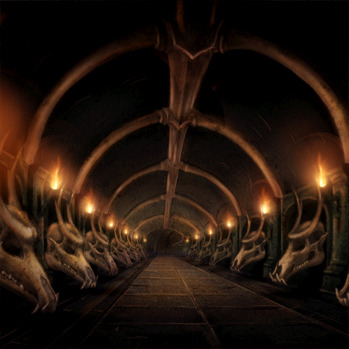

After careful consideration, you decided to go to the Dragonbone Catacombs. You hoped that something at the Catacombs could help restore your bending to its full strength. Later that night, you took your dragon and flew to the Catacombs. Once you arrived, there was one guard at the entrance to the Catacombs, so you decided to wait until the guard left for the night. After a few hours of waiting, the guard left his post and you snuck in the entrance after he left. You went down a spiral stair case that lead to a long hallway lined with statues that went left and right. You did not know which way to go but you decided to go right after hearing whispers of temple priests from the left. You ran down the halls passing tombs of several past Fire Lords. Suddenly you came across a door with a sign indicating a room of scrolls. You snuck into the room and looked through all of the sections. There were sections on the establishment of the Fire Nation, Fire Nation ruling guidelines, Fire Sage records, and information on past war strategies.
|  |
It seemed hopeless. You thought you were never going to find what you were looking for, this room and the Catacombs were just too big to find what you were loking for. Suddenly, a scroll that was pushed out more than the others on a top shelf caught you eye. You reached for it and pulled it out, but we you did, you caused about 5 to 8 other scrolls to topple down onto the ground with a loud bang. In a panic, you stuff the scroll you initially grabbed and stuffed it into your shirt and ran out of the room. Around the corner, you hear a guard yell that they heard the noise coming from where you were. You ran as fast as you could back to the entrance until... BANG! You fell to the ground and the scroll in your shirt fell out and landed on the ground. When you looked up, you saw a Fire Sage staring down at you. The sgae ask who you were and said you were not supposed to be there in panic and worry. As you scrambled to stand up, two guards came up from behind you and grabbed your arms. The guards noticed the scroll on the ground and immediately called you as a theif and a criminal for breaking into the Catacombs and taking a scroll. One of the guards yelled with confidence that you were going to be put in prison for your crimes, and with that, they dragged you away.